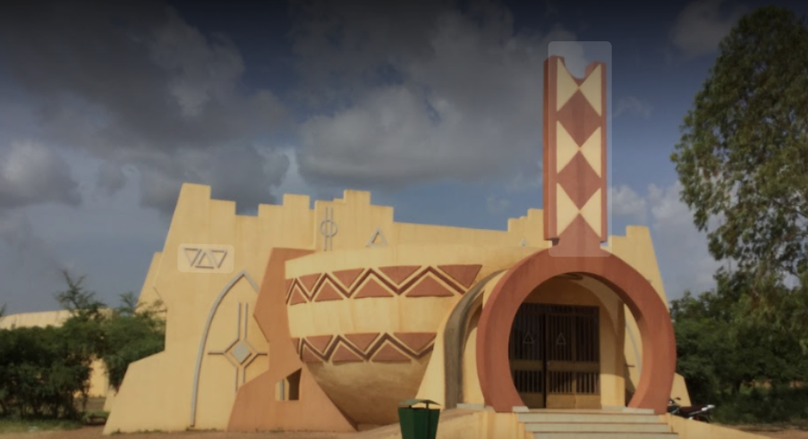
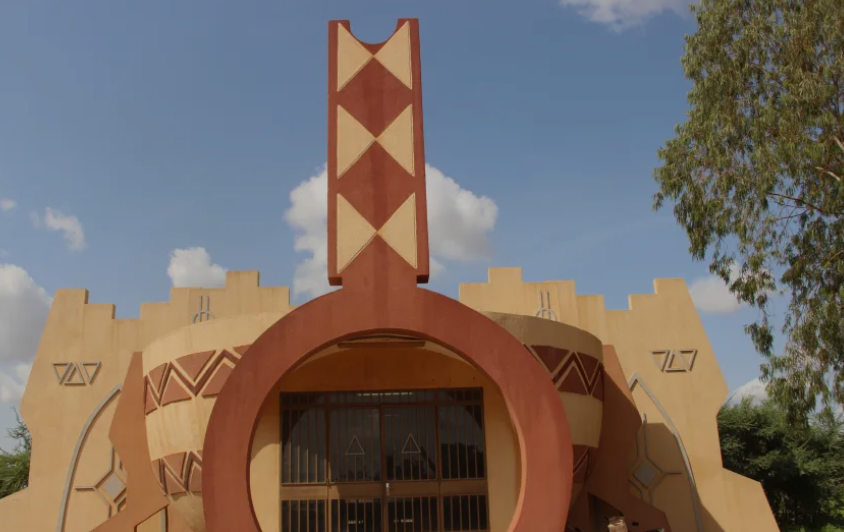
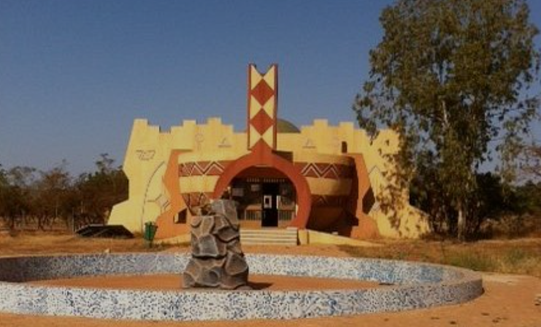
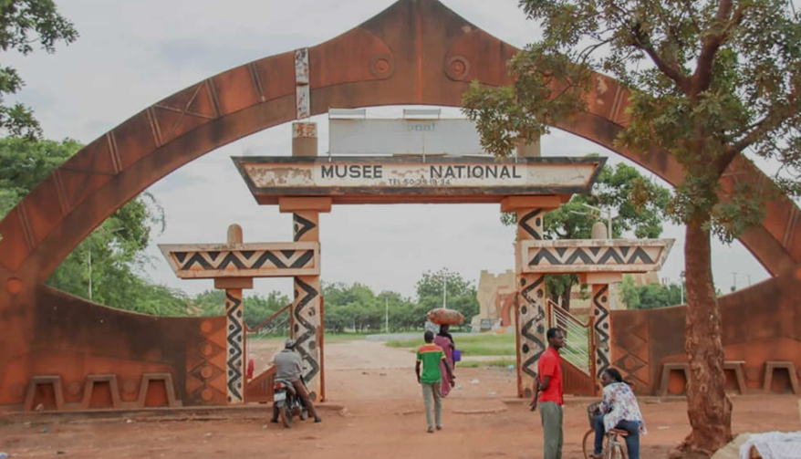

Musée National de Ouagadougou

Présentation
Le Musée National du Burkina Faso est le gardien du patrimoine culturel et historique du pays. Il abrite des collections d'objets traditionnels, de masques, de sculptures et d'outils témoignant de la richesse des différentes ethnies du Burkina Faso.
Une visite au Musée National est incontournable pour comprendre l'identité culturelle burkinabè dans toute sa diversité. Le musée présente les traditions de plus d'une soixantaine d'ethnies qui composent le peuple burkinabè.
Histoire
Le Musée National a été fondé pour préserver et valoriser le patrimoine culturel du Burkina Faso. Ses collections ont été constituées au fil des années grâce aux dons, aux fouilles archéologiques et aux acquisitions auprès des communautés locales.
Il joue un rôle essentiel dans la transmission de la culture burkinabè aux jeunes générations et dans la promotion du pays auprès des visiteurs étrangers.
Activités proposées
- Visites guidées des collections permanentes
- Expositions temporaires
- Ateliers pédagogiques pour les scolaires
- Conférences sur le patrimoine culturel
Informations pratiques
📍 Adresse : Ouagadougou
🕐 Horaires : Mardi - Dimanche, de 9h à 17h
💰 Tarif : Payant
📅 Année : 2026
📸 Galerie photos


